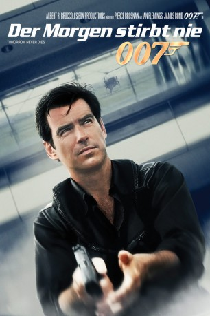
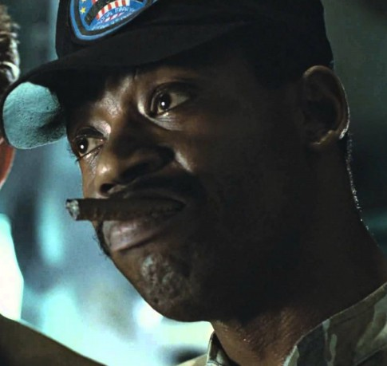

#273 James Bond 19 - Pierce Brosnan - Der Morgen stirbt nie
Alternativ: Tomorrow Never Dies
 
 IMDB-Wertung: 6.5 / 10
IMDB-Wertung: 6.5 / 10  Metascore: 52
Metascore: 52 
Der britische Medienmogul Carver will durch Manipulation und Intrigen England in einen Krieg mit China stürzen, denn schlechte Nachrichten bringen Geld. Nur James Bond kann ihn davon abhalten, durch seine Medienpräsenz einer der mächtigsten Männer der Welt zu werden.
Jahr: 1997
Dauer: 119 Minuten
FSK: 16
Land: England Studio: UIPTonspuren: AAC2.0 - ,
Untertitel: , , Englisch, , , , , , , , ,
Auflösung: 1080p (1916×820) Größe: 16486 MB
Genre: Action, Abenteuer, Thriller
Regisseur:  Roger Spottiswoode
Roger Spottiswoode
Drehbuch: Bruce Feirstein, Ian Fleming
Soundtrack: David Arnold
Darsteller:
 Pierce Brosnan als James Bond
Pierce Brosnan als James Bond Jonathan Pryce als Elliot Carver
Jonathan Pryce als Elliot Carver Michelle Yeoh als Wai Lin
Michelle Yeoh als Wai Lin Teri Hatcher als Paris Carver
Teri Hatcher als Paris Carver Ricky Jay als Henry Gupta
Ricky Jay als Henry Gupta Götz Otto als Stamper
Götz Otto als Stamper Joe Don Baker als Jack Wade
Joe Don Baker als Jack Wade Vincent Schiavelli als Dr. Kaufman
Vincent Schiavelli als Dr. Kaufman Judi Dench als M
Judi Dench als M Desmond Llewelyn als Q
Desmond Llewelyn als Q Samantha Bond als Miss Moneypenny
Samantha Bond als Miss Moneypenny Colin Salmon als Chief of Staff Charles Robinson
Colin Salmon als Chief of Staff Charles Robinson Geoffrey Palmer als Admiral Roebuck
Geoffrey Palmer als Admiral Roebuck- Julian Fellowes als Minister of Defence
- Cecilie Thomsen als Professor Inga Bergstrom
 Nina Young als Tamara Steel
Nina Young als Tamara Steel Colin Stinton als Dr. Dave Greenwalt
Colin Stinton als Dr. Dave Greenwalt- Anthony Green als Firing Officer - HMS Chester
 Julian Rhind-Tutt als Yeoman - HMS Devonshire
Julian Rhind-Tutt als Yeoman - HMS Devonshire Gerard Butler als Leading Seaman - HMS Devonshire
Gerard Butler als Leading Seaman - HMS Devonshire Michael Byrne als Admiral Kelly - HMS Bedford
Michael Byrne als Admiral Kelly - HMS Bedford Pip Torrens als Captain - HMS Bedford
Pip Torrens als Captain - HMS Bedford Hugh Bonneville als Air Warfare Officer - HMS Bedford
Hugh Bonneville als Air Warfare Officer - HMS Bedford Jason Watkins als Principal Warfare Officer - HMS Bedford
Jason Watkins als Principal Warfare Officer - HMS Bedford Brendan Coyle als Leading Seaman - HMS Bedford
Brendan Coyle als Leading Seaman - HMS Bedford- Nadia Cameron-Blakey als Beth Davidson
 Rolf Saxon als Philip Jones
Rolf Saxon als Philip Jones- Vincent Wang als MiG Pilot
- Neil Finnighan als Carver's Thug , uncredited
- Kinue Kato als Party Guest , uncredited
 Theo Kypri als MiG Pilot , uncredited
Theo Kypri als MiG Pilot , uncredited- Anthony Maddalena als British Diplomatic Delegate , uncredited
- Curtis Rivers als German Baddie / Stealth Ship Guard , uncredited
- Sherry Stone als Party Guest , uncredited
 Michael G. Wilson als Tom Wallace , uncredited
Michael G. Wilson als Tom Wallace , uncredited Terence Rigby als General Bukharin
Terence Rigby als General Bukharin- Daphne Deckers als PR Lady
-  Al Matthews als Master Sergeant 3
- Mark Spalding als Stealth Boat Captain
- Bruce Alexander als Captain - HMS Chester
- Christopher Bowen als Cmdr. Richard Day - HMS Devonshire
- Andrew Hawkins als Lt. Cmdr. Peter Hume - HMS Devonshire
- Dominic Shaun als Lieutenant Commander - HMS Devonshire
- Adam Barker als Sonar Operator - HMS Devonshire
- Eoin McCarthy als Yeoman - HMS Bedford
- David Ashton als First Sea Lord
- William Scott-Masson als Staff Officer #1
- Laura Brattan als Staff Officer #2
- Liza Ross als Mary Golson
- Hugo Napier als Jeff Hobbs
Datei: X:\7+mehr(A-Z)\007 James Bond\James Bond 19 - Pierce Brosnan - Der Morgen stirbt nie (1997, FSK16, 1916x820).mkv seit 15.02.2015
Festplatte: HD Collection-7+mehr(A-Z)+Person
 Es gibt insgesamt 28 Filme in der Gruppe '7+mehr(A-Z)\007 James Bond'
Es gibt insgesamt 28 Filme in der Gruppe '7+mehr(A-Z)\007 James Bond'